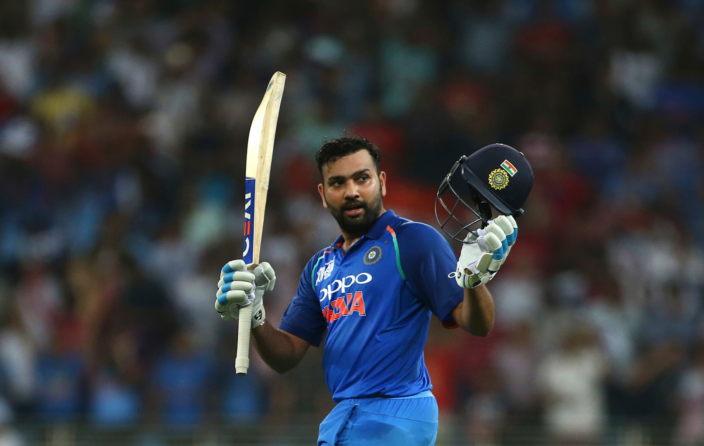

The current captain of India men’s cricket team in all formats.
Rohit Gurunath Sharma was born on 30 April 1987 in Nagpur, Maharashtra. He started playing cricket at the age of 11 and made his debut for Mumbai in domestic cricket in 2005. He made his international debut for India in 2007 in a one-day international match against Ireland.
Rohit Sharma is considered as one of the best batsmen of his generation and one of the greatest opening batters of all time. He is known for his timing, elegance, six-hitting abilities and leadership skills. He holds several records in international cricket, such as:
Here are some quotes from Rohit Sharma:
"I don't think about what people say about me. It's not important for me. I don't play for them. I play for my country." Rohit Sharma
"Success is not final; failure is not fatal: It is the courage to continue that counts." Rohit Sharma
If you want to learn more about Rohit Sharma, you can visit these links:
Rohit Sharma - Wikipedia